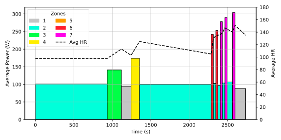
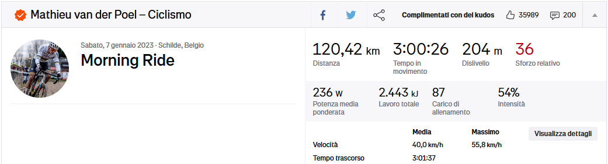

Artificial Intelligence and Prescriptive Analytics
KPIs in sport
DISI — University of Bologna
m.francia@unibo.it
Training KPIs

Lucy Charles-Barclay Wins Ironman 70.3 World Championship (2021)
We are preparing for a race and we need to create a proper plan.
Risks of Poor Planning:
- Overtraining
- Underperformance
- Increased risk of injury
How can we exploit data-driven planning?
Matteo Francia - Machine Learning and Data Mining (Module 2) - A.Y. 2024/25
Training KPIs
Key Performance Indicators (KPIs) are measurable values that track performance and progress toward a goal.
- Objectively measure improvements
- Balance training intensity and recovery
- Prevent overtraining or undertraining
We need to optimize performance readiness: achieved when fitness is high, and fatigue is low
- We need to minimize fatigue (i.e., short-term stress from recent training)
- Maximize the fitness (i.e., long-term training adaptations)
How can we quantify all these aspects?
Training Load
Training Load (\(TL\)): a measure of the stress placed on the body during exercise.
- \(TL = Duration \times Intensity\)
- Units: \(TSS\) (Training Stress Score)
How do we quantify Intensity?
How do we quantify Intensity?
Let’s focus on a specific sport, cyclism
- We can measure the current rider’s effort (= power) using power meters

Power meters
Cycling power meters measure torque using strain gauges.
- The strain gauges measure a rider’s force on a given component (pedal, crank, etc.).
- This torque is later converted to power by multiplying it by that component’s cadence (angular velocity).
Normalized Power
Normalized Power \(\text{NP} = \sqrt[4]{\frac{\sum_{i=1}^{n} P_{\text{30-sec}, i}^4}{n}}\) quantifies the physiological demands of a cycling activity with variable intensity.
Divide the ride into 30-second moving average and calculate the average power for every 30-second interval.
- Smooth out short-term power fluctuations.
Raise each 30-second average to the fourth power
- Emphasize higher power outputs, as intense efforts contribute disproportionately to physiological stress.
Take the average of all fourth powers
Take the fourth root of the Result
Normalized Power
Unlike average power, NP accounts for the variability in effort during a ride, reflecting how the body responds to the stress.
- High-intensity intervals are more stressful than steady-state efforts, even if the average power is the same.

Time Interval Avg Power Avg HR … … … … 2285 28 242 130 2313 32 103 134 2345 27 253 135 2372 32 97 136 2404 28 278 139 2432 32 104 147 2464 28 290 145 2492 71 107 140 … … … …
Given the 8 intervals from the table
- Average power = 184
- Normalized power = 226
Towards Intensity
Is \(NP=200W\) a hard or an easy ride?
Easy ride for Mathieu van der Poel (from Strava), impossible ride for me
The Normalized Power is an absolute measurement.
- Absolute measurements provide information on volume, size, or magnitude.
- Relative measurements provide a comparative gauge of how well the work has been executed.
Intensity Factor
Intensity Factor \(IF = \frac{\text{Normalized Power (NP)}}{\text{FTP}}\) measures workout intensity relative to the Functional Threshold Power (\(FTP\)).
\(FTP\): the highest average power (measured in watts with sensors) a cyclist can sustain for 60 minutes.
- Testing Methods:
- 20-minute time trial: \(FTP = 95\%\) of average power.
- Ramp or step tests with smart trainers.
\(IF\) ranges:
- Easy recovery: \(IF < 0.65\)
- Moderate endurance: \(IF \in [0.65, 0.85]\)
- High-intensity intervals: \(IF > 0.85\)
Use \(IF\) to adjust the training load:
- Too high = risk of overtraining.
- Too low = insufficient stimulus for improvement.
Now that we have defined the Training Load, what about Fitness and Fatigue?
Key Problems in quantification:
- Subjectivity: Perceived exertion varies by individual.
- External Factors: Sleep, nutrition, and stress influence fatigue but are hard to measure precisely.
- Delayed Effects: Fatigue may appear days after intense training.
- How do we distinguish Fatigue from Fitness?
- As of today, yesterday’s activity provokes fatigue but will increase fitness in the long run
Quantifying Fatigue: Acute Training Load
Acute Training Load \(ATL = \frac{\text{Sum of daily TL over 7 days}}{7}\)
- Short-term training stress, typically measured over the past 7 days.
- Reflects recent training intensity and fatigue.
Quantifying Fitness: Chronic Training Load
Chronic Training Load \(CTL = \frac{\text{Sum of daily TL over 42 days}}{42}\)
- Long-term training stress, measured over the past 42 days.
- Reflects the overall fitness level.
Quantifying Performance Readiness
Training Stress Balance \(TSB = \text{Fitness (CTL)} - \text{Fatigue (ATL)}\)
- Positive \(TSB\): Indicates readiness.
- Negative \(TSB\): Indicates fatigue.
TSB over 7 days (from intervals.icu)
Training Adjustments:
- If \(CTL\) is low, focus on increasing training volume or intensity.
- If \(ATL\) is high, incorporate rest days or low-intensity sessions.
Planning to Optimize Performance Readiness
Monitor Key Metrics:
- \(CSS\): Single training load
- \(ATL\): Short-term fatigue
- Lower \(ATL\) during taper to avoid carrying excessive stress.
- \(CTL\): Long-term fitness
- Maintain a high \(CTL\) relative to past races.
- \(TSB\): Recovery and readiness
- Aim for a positive balance (e.g., +10 to +20) before race day.
Adjust Based on Feedback:
- Reduce intensity or volume if fatigue accumulates.
- Focus on recovery activities (e.g., yoga, massage).
Tapering Before the Race:
- Gradual reduction in training volume to reduce fatigue while maintaining fitness.
- Reduce training volume by 40–60% over 1–3 weeks.
- Maintain intensity to preserve fitness.